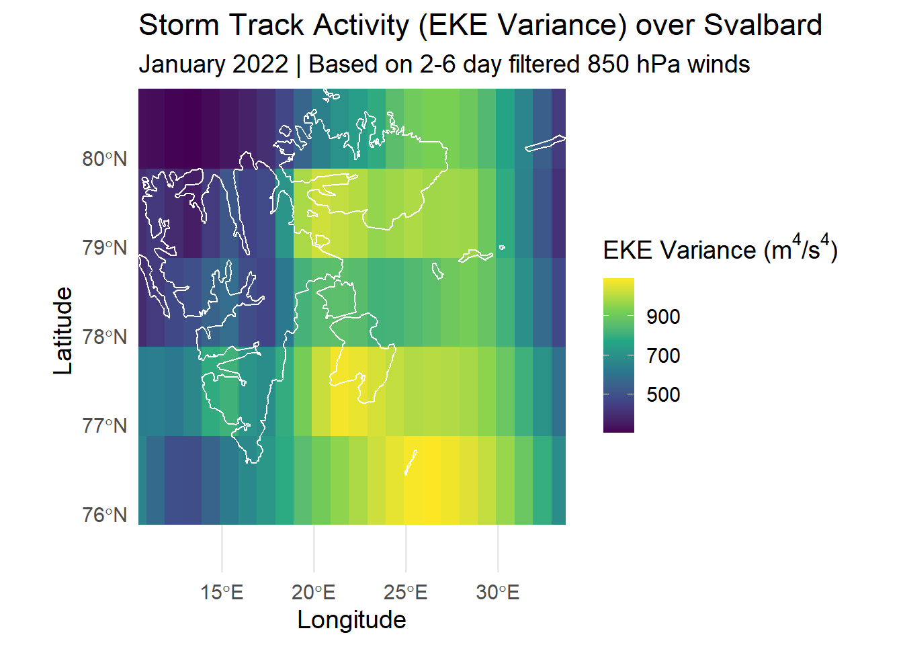

# Load R Libraries
library(reticulate)
library(tidyverse)
library(terra)
library(sf)
library(rnaturalearth)
library(glue)
library(future)
library(furrr)
library(progressr)
library(tictoc)
#library(discordrpc) # Disable this if you run the code on your pc
# Configure Python Environment
use_virtualenv("arctic-env", required = TRUE)
# Define the absolute path to the data storage folder
DATA_DIRECTORY <- "E:/ERA5_data"
# Setting for more parallel downloads
#plan(multisession, workers = 20)storminess_test
Setup
A self-contained and reproducible computational environment was established as the foundation for the analysis.
- Project Setup: The workflow was situated within an RStudio Project to ensure all file paths were relative and the project was portable. The R
reticulatepackage was used to create and manage a dedicated Python virtual environment ("arctic-env"), ensuring all Python package dependencies are isolated and reproducible.
EKE, TKE and MKE 850hPa January 2022 test
Data Acquisition: The source data was programmatically downloaded from the Copernicus Climate Data Store (CDS) using the Python cdsapi library.
The specific dataset requested was
reanalysis-era5-pressure-levels.The variables
u_component_of_windandv_component_of_windwere downloaded at the 850 hPa pressure level in NetCDF format.The downloaded data was loaded into a Python session as an
xarray.Datasetobject, which is ideal for handling labeled, multi-dimensional climate data.
Step 1: Isolating Synoptic-Scale Eddy Components
To isolate the transient eddy components (\(u', v'\)) associated with synoptic-scale storms, a two-step process was applied to the wind field data, consisting of a Reynolds decomposition followed by temporal filtering.
A. Proxy Reynolds Decomposition (for Technical Testing)
[cite_start]The foundational step in calculating eddy kinetic energy is Reynolds decomposition, which separates the instantaneous wind field (\(u\)) into a time-mean component (\(\bar{u}\)) and a fluctuating eddy component (\(u'\))[cite: 372]. For this preliminary test on a single month of data, a true long-term climatological mean was not available. Therefore, a proxy decomposition was performed:
- The time-mean wind for the single month (\(\bar{u}_{\text{monthly}}\)) was calculated.
- This monthly mean was subtracted from the instantaneous wind field to produce a proxy anomaly (\(u - \bar{u}_{\text{monthly}}\)).
Note: This proxy is for technical validation only. [cite_start]For the final climatological analysis, the mean will be calculated over the entire 1958-present period to derive the true eddy components as defined in the literature[cite: 374].
B. Band-Pass Filtering
To isolate the energy specifically within the synoptic timescale, a digital band-pass filter was applied to the proxy anomaly fields.
- Filter Design: A 5th-order Butterworth filter was designed using
scipy.signal.butter. [cite_start]The filter was configured with a passband corresponding to periods of 2 to 8 days, a standard choice consistent with the typical lifespan of synoptic-scale storms[cite: 385]. - Filter Application: The filter was applied using
scipy.signal.filtfilt, which performs a zero-phase filtering operation to prevent any temporal shift in the output data. Prior to filtering, the time series at each grid cell was detrended to ensure numerical stability. This process yields the final test eddy components,u_eddyandv_eddy.
# Import necessary Python libraries
import xarray as xr
import numpy as np
from scipy import signal
import os
# --- PART 1: VECTORIZED FILTER FUNCTION ---
def vector_bandpass_filter(data_array, time_dim, fs, lowcut_days, highcut_days, order=5):
"""
Applies a band-pass filter along a specified dimension of an xarray DataArray
using the efficient xr.apply_ufunc for vectorization.
"""
#Designing filter
lowcut_freq = 1 / lowcut_days # e.g., 1 / 6.0 = 0.167
highcut_freq = 1 / highcut_days # e.g., 1 / 2.0 = 0.5
# 2. Design the Butterworth filter
b, a = signal.butter(order, [lowcut_freq, highcut_freq], btype='band', fs=fs)
def filter_func(x):
x_float = x.astype('float64')
return signal.filtfilt(b, a, signal.detrend(x_float))
filtered_data = xr.apply_ufunc(
filter_func, data_array,
input_core_dims=[[time_dim]],
output_core_dims=[[time_dim]],
exclude_dims=set((time_dim,)),
dask="parallelized", output_dtypes=[data_array.dtype]
)
return filtered_data## 1. The bandpass_filter Function
First, we defined a Python function.
def vector_bandpass_filter(data_array, time_dim, fs, lowcut_days, highcut_days, order=5): # ... code inside ... return filtered_data The function’s behavior is controlled by several key parameters:
data_array: The inputxarrayDataArray containing the time series to be filtered (e.g., theu_anomaly_proxy).fs: The sampling frequency, which tells the filter how many data points occur per day. Since the test data is hourly, we have 24 samples per day, sofs = 24. For the final 6-hourly data, this must befs = 4.lowcut_daysandhighcut_days: These define the period band of interest. We set them to6.0and2.0to keep signals with a period between 2 and 6 days. (Note: a 2-8 day band is more standard in the literature for capturing the full storm lifecycle and may be a better choice for the final analysis).order=5: The filter order, which controls the sharpness of the frequency cutoff. An order of 5 is a robust, standard choice that provides a clean separation without introducing instability.
Why a function? We need to perform the exact same filtering operation on both the u and v wind components. Encapsulating the logic in a function makes our code reusable, readable, and less prone to errors from copy-pasting.
## 2. Inside the Function: The “How”
This is where the scientific computation happens.
A. Designing the Filter
from scipy import signal # ... b, a = signal.butter(order, [low, high], btype='band') Digital filters operate in the frequency domain, not the period domain. The first step is to convert our desired periods (in days) to frequencies (in cycles per day). Note the inverse relationship: the longer period (lowcut_days) corresponds to the lower frequency bound (lowcut_freq). These frequencies are then passed to scipy.signal.butter to design a Butterworth filter, which calculates the necessary mathematical coefficients (b and a) to achieve the desired filtering.
B. Applying the Filter
return signal.filtfilt(b, a, signal.detrend(x_float))This is the core operation. signal.filtfilt applies the filter to the data. The filtfilt (“filter-filter”) method is crucial because it filters the data once forward and then backward, a process that perfectly cancels out any time lag (phase shift). This ensures the filtered storm signals remain perfectly aligned in time with the original anomalies. The data is also detrended with signal.detrend() before filtering to remove any linear trends that could cause instability.
C. Applying Across the Entire grid
filtered_data = xr.apply_ufunc(...) The filtfilt function is designed for 1D arrays (a single time series). Our data is a 3D grid (time, latitude, longitude). xr.apply_ufunc efficiently applies the 1D filtfilt function to the time series at every single grid point automatically, replacing a slow manual loop and leveraging parallel processing for performance. The input_core_dims=[['valid_time']] argument tells xarray that the filtering function operates along the valid_time dimension.
## 4. Putting It All Together
Finally, we call our function:
u_eddy_test = vector_bandpass_filter(
u_anomaly_proxy, 'valid_time', fs_samples_per_day, lowcut_period_days, highcut_period_days
)
v_eddy_test = vector_bandpass_filter(
v_anomaly_proxy, 'valid_time', fs_samples_per_day, lowcut_period_days, highcut_period_days
)This executes the whole process. It feeds the raw u and v wind data into our function. The function then designs the filter and applies it across the entire grid, returning the perfectly isolated eddy components (u’ and v’). These are now ready for the final EKE calculation.
# --- PART 2: CORRECTED MAIN PROCESSING WORKFLOW FOR A TEST FILE ---
# --- A. Load Test Data ---
ds = xr.open_dataset('data/era5_850hpa_2022_01_svalbard.nc').squeeze()
# --- B. PROXY FOR REYNOLDS DECOMPOSITION (FOR TECHNICAL TEST ONLY) ---
# This is the crucial correction. For this test, we use the single month's mean
# as a proxy for the long-term climatological mean.
# THIS IS NOT CLIMATOLOGICALLY CORRECT.
print("Calculating proxy mean for this single month...")Calculating proxy mean for this single month...u_mean_proxy = ds['u'].mean(dim='valid_time')
v_mean_proxy = ds['v'].mean(dim='valid_time')
print("Calculating proxy anomalies from the monthly mean...")Calculating proxy anomalies from the monthly mean...u_anomaly_proxy = ds['u'] - u_mean_proxy
v_anomaly_proxy = ds['v'] - v_mean_proxy
# --- C. Define Filter Parameters for the Test File ---
# NOTE: Your test file is hourly, so fs=24 is correct for the test.
# For your FINAL 6-hourly data, you MUST change this to fs=4.
fs_samples_per_day = 24
lowcut_period_days = 6.0
highcut_period_days = 2.0
filter_order = 5
# --- D. Band-Pass Filter the PROXY ANOMALIES to get test eddy components ---
print("Applying band-pass filter to proxy anomalies...")Applying band-pass filter to proxy anomalies...u_eddy_test = vector_bandpass_filter(
u_anomaly_proxy, 'valid_time', fs_samples_per_day, lowcut_period_days, highcut_period_days
)
v_eddy_test = vector_bandpass_filter(
v_anomaly_proxy, 'valid_time', fs_samples_per_day, lowcut_period_days, highcut_period_days
)
print("Filtering complete.")Filtering complete.Explanation of the Corrected Reynolds Decomposition Workflow
The Core Principle: Signal vs. Climate
The entire purpose of Reynolds decomposition in this context is to separate the “weather” (\(u'\)) from the “climate” (\(\bar{u}_{\text{clim}}\)) before we analyze it.
- The instantaneous wind (\(u\)) at any moment is the total signal.
- The long-term climatological mean (\(\bar{u}_{\text{clim}}\)) is the stable, predictable background state of the climate over decades.
- The eddy component (\(u'\)) is the fluctuating, transient part that represents the weather systems, including storms.
The formal relationship is: \[u = \bar{u}_{\text{clim}} + u'\]
The goal is to isolate \(u'\), but since it cannot be measured directly, we must calculate it by first finding \(\bar{u}_{\text{clim}}\) and then subtracting it from the total signal \(u\).
The Proxy Method
Because the current test case uses only one month of data, we cannot calculate the true \(\bar{u}_{\text{clim}}\). The test code works around this by creating a temporary, stand-in mean:
- Calculate a Proxy Mean: It computes the average wind for only January 2022 (\(\bar{u}_{\text{monthly}}\)). This represents the average weather of that specific month, not the long-term climate.
- Calculate a Proxy Anomaly: It then subtracts this monthly mean from the instantaneous data: \[u'_{\text{proxy}} = u - \bar{u}_{\text{monthly}}\]
This \(u'_{\text{proxy}}\) is what is fed into the band-pass filter. The purpose of this step is purely technical: it re-centers the monthly data around zero, which is structurally similar to a true anomaly field, allowing to test the vector_bandpass_filter function. The resulting \(u_{\text{eddy\_test}}\) is technically valid from the filter, but it is not a physically meaningful representation of a climatological eddy.
The Final Climatological Method
For your final, scientifically valid analysis, you must execute the full version of this logic:
- Load All Data: Load the entire 1958-present multi-decadal dataset into a single xarray object.
- Calculate the True Climatological Mean: Compute the mean wind fields, \(\bar{u}_{\text{clim}}\) and \(\bar{v}_{\text{clim}}\), by averaging over the entire time dimension of the dataset. This results in a single 2D map representing the stable background flow for the satellite era.
- Calculate the True Anomaly: Subtract this single 2D mean field from the entire 3D time series: \[u_{\text{anomaly}} = u - \bar{u}_{\text{clim}}\] The result is a 3D time series of true anomalies, representing all fluctuations away from the climate baseline.
- Filter for Synoptic Eddies: Apply the 2-6 day band-pass filter to this \(u_{\text{anomaly}}\) time series. The output of this step is the correctly calculated, physically meaningful eddy component, \(u'\).
Step 2: Calculate EKE, MKE and TKE
The three key kinetic energy indices were calculated in Python.
Eddy Kinetic Energy (EKE): The instantaneous EKE was calculated at each grid cell for every time step from the eddy components. The result was stored as a new 3D
DataArraynamedeke.Mean Kinetic Energy (MKE): The time-averaged wind components, u and v, were calculated by applying the
.mean(dim='valid_time')method to the originaluandvDataArrays. MKE was then calculated and resulted in a 2D DataArray.Total Kinetic Energy (TKE): The time-averaged EKE, was first calculated. The mean TKE was then computed as the sum of the two time-averaged components.
The primary storminess metric was calculated as the final analytical step in Python.
- The variance of EKE was computed by applying the
.var(dim='valid_time')method to the 3DekeDataArray. This operation collapses the time dimension, resulting in a final 2Dxarray.DataArray(eke_variance) which serves as the “fundamental metric for overall storm track activity.”
# --- E. Calculate Instantaneous EKE for the test ---
eke_inst_test = 0.5 * (np.square(u_eddy_test) + np.square(v_eddy_test))
eke_inst_test.name = 'eke'
# --- F. Calculate the Primary Storminess Metric: Variance of EKE for the test ---
eke_variance_test = eke_inst_test.var(dim='valid_time')
eke_variance_test.name = 'eke_variance'
# --- G. Save Processed Test Data to NetCDF File ---
output_dir = "data/processed_test"
os.makedirs(output_dir, exist_ok=True)
output_path = os.path.join(output_dir, "test_eke_variance_jan_2022.nc")
eke_variance_test.to_netcdf(output_path, mode='w') # Use mode='w' to overwrite
print(f"\nTechnical test complete. Test file saved to:\n{output_path}")
Technical test complete. Test file saved to:
data/processed_test\test_eke_variance_jan_2022.ncStep 3: Conversion and remapping
The final 2D data products were transferred from Python to R for remapping and visualization.
Data Transfer: The
eke_variance,mke, andtkexarrayobjects were accessed in R usingreticulate’spy$accessor.Remapping to Standard Grid: As required by your proposal for robust trend analysis, each data grid was remapped to a common 1.0° x 1.0° grid. This was achieved by:
First converting the Python objects into high-resolution
terra::SpatRasterobjects in R.Creating a blank 1.0° target grid (
template_raster).Using the
terra::resample()function withbilinearinterpolation to project the high-resolution data onto the target grid.
# --- PART 3: Remapping and Visualization in R ---
# --- A. Load the Processed Data Directly into Terra ---
# This is much simpler and more robust than the manual conversion.
eke_variance_highres <- terra::rast("data/processed/eke_variance_jan_2022.nc")
mke_highres <- terra::rast("data/processed/mke_jan_2022.nc")
tke_highres <- terra::rast("data/processed/tke_mean_jan_2022.nc")
# --- B. Create the 1.0-degree Target Grid ---
template_raster <- terra::rast(
resolution = 1.0,
extent = ext(eke_variance_highres),
crs = "EPSG:4326"
)
# --- C. Resample to the Standard Grid ---
eke_variance_resampled <- terra::resample(eke_variance_highres, template_raster, method = "bilinear")
mke_resampled <- terra::resample(mke_highres, template_raster, method = "bilinear")
tke_resampled <- terra::resample(tke_highres, template_raster, method = "bilinear")# --- D. Visualization ---
svalbard_sf <- rnaturalearth::ne_states(country = "Norway", returnclass = "sf") |>
filter(name == "Svalbard")
svalbard_bbox <- st_bbox(svalbard_sf)
eke_variance_df <- as.data.frame(eke_variance_resampled, xy = TRUE)
ggplot() +
geom_raster(data = eke_variance_df, aes(x = x, y = y, fill = eke_variance)) +
geom_sf(data = svalbard_sf, fill = NA, color = "white", linewidth = 0.5) +
scale_fill_viridis_c(name = expression("EKE Variance (m"^4*"/s"^4*")")) + # Using expression for proper units
labs(
title = "Storm Track Activity (EKE Variance) over Svalbard",
subtitle = "January 2022 | Based on 2-6 day filtered 850 hPa winds",
x = "Longitude", y = "Latitude"
) +
coord_sf(
xlim = c(svalbard_bbox["xmin"], svalbard_bbox["xmax"]),
ylim = c(svalbard_bbox["ymin"] + 1, svalbard_bbox["ymax"]),
expand = FALSE
) +
theme_minimal(base_size = 14)